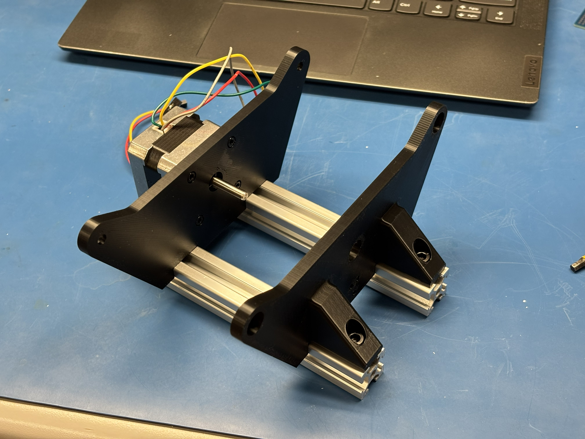
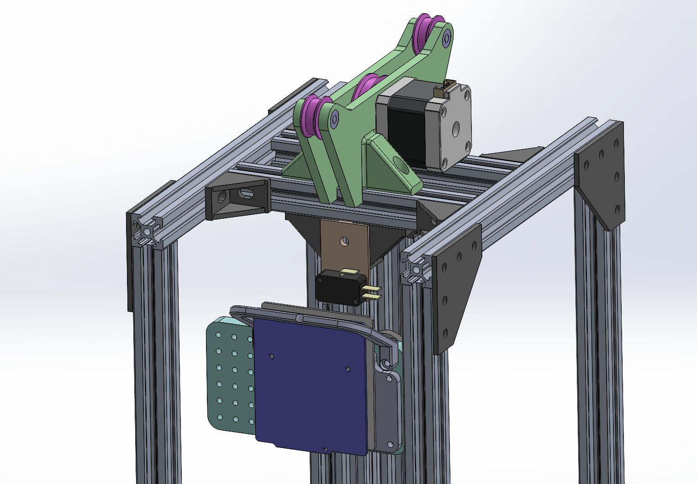
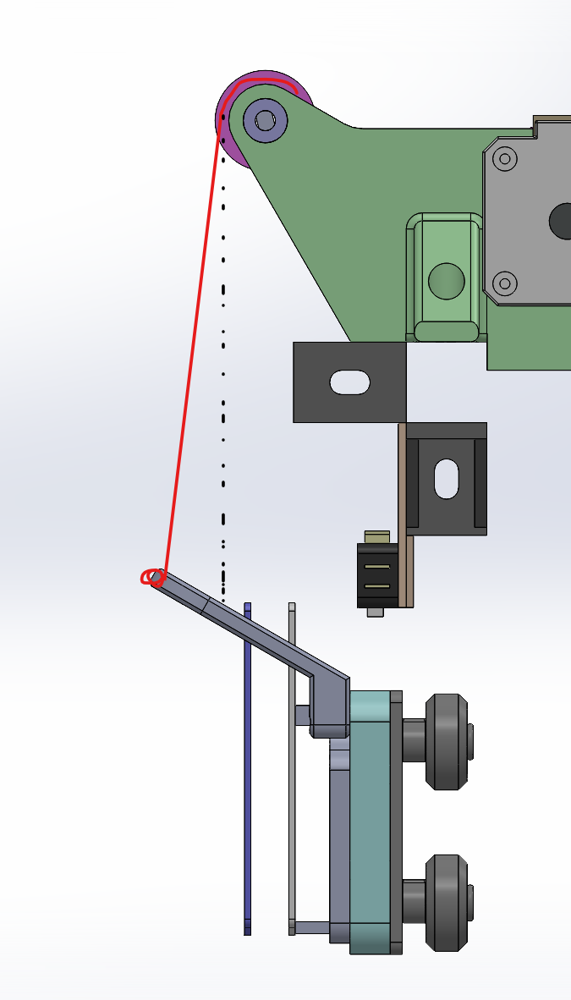

Summary
My logbook cover pageNick printed the parts requested on 2026-06-02 and brought them to campus. I used the parts to test fit the motor, pulleys, and plates.

I designed limit switch mounts, which will prevent the elevator overextension/overretraction. The limit switches are installed on the central V-slot extrusions.
I designed traveller car subassembly. The central part of the subassembly is a roller gantry plate, which rigidly attaches the car/counterweight to the platfrom while allowing linear motion up and down. Since the gantry is difficult to remove, an adapter plate is attached to it. The adapter plate has a grid of M3 mounting holes with 5mm pitch. This allows us to modify the car subassembly without removing the gantry from the platform. The mounting hole grid also leave room for expansion later.
A mount for STM32 Nucleo board and Floor Controller Shiled PCB was designed. Nucleo board reference manual was used to dimension the mounting holes of the development board. The mount is attached to the adpater plate with 4x M3 screws.

There is one potential problem with the desing. The cable attachment part does not properly align with the pulley system. This results in the cable being angled slightly. And the angle changes based on the elevation of the traveller subassembly. This results in a non-linear relationship between motor position and traveller car height. This problem can be alliviated by revising the pulley plates or accounting for the non-lineariy in code for the motor controller.
